Södermalm i tid och rum
19.
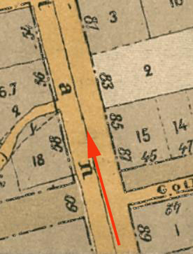
{kind=link}
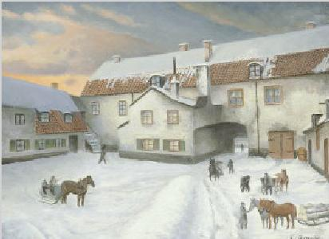
|
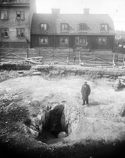
S.k. jättegryta funnen vid sänkningen av Götgatan (Postmästarbacken) mellan Blekinge- och Gotlandsgatan. I bakgrunden kvarteret Kvadraten
Jättegryta är en i berg urholkad fördjupning, som bildats genom att strömmande vatten fått en sten att rotera tillsammans med grus och mindre stenar i en virvel under en längre tid.
Många stora jättegrytor skapades under istiderna, genom att lösryckta moränblock i framforsande smältvatten fraktades tillsammans med grus och småsten, för att slutligen hamna på glaciärens botten. Där kilades blocket (stenen) fast i en grop eller spricka av berggrunden, varmed smältvattnet med all kraft skötte dess rotation och grytan som bildades blev ett faktum. Löpstenen som urholkat en jättegryta ligger oftast kvar som en ovanligt slät, äggformad sten, antingen på dess botten eller i dess närhet.
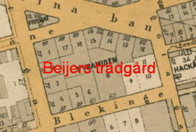 Götgatan 87 och Gotlandsgatan 2 på toppen av Postmästarbacken, då genombrytning av berget från öster ned till den blivande utjämnade Götgatan sker. Nedan samma plats 2018 |
Postmästarbacken Bryggerier och krogar Följande är hämtat från https://obelisken24.wordpress.com/historia och handlar om kvarteret Obelisken, skrivet av Christer Blomstrand:
Ölgubbarna i Gotlandsparken och nere i hörnan av Götgatan vet nog inte själva om det, men dom fullföljer bara en ölkultur i våra kvarter, som är mer än 150 år gammal.
Dom kanske egentligen borde ha kulturstöd.
Förr i tiden, fram till de första åren av 1900-talet, hade Götgatan en hög backe med krönet ungefär vid korsningen av Gotlandsgatan. Den backen kallades för Fyllebacken och här låg krogarna också tätt. I våra trakter fanns också åtminstone två bryggerier. Dom hade också sina egna utskänkningar. Krogarna och gästgiverierna hade också lite mer seriös mat men var något dyrare. Ett smörgåsbord på mitten av 1800-talet kostade 75 öre.
Det lär ha funnits ca 16 krogar och brännvinsutskänkningar bara i de södra kvarteren av Götgatan.
På de enklare så kallade brännvinskrogarna fick man en sup eller fler, öl och en sillbit eller strömming med hårt bröd.
Kälkbacke på Götgatan.
På andra sidan den gamla backen på Götgatan, från korsningen av Gotlandsgatan och ner mot Ringvägen var det brant ner mot Skanstull, innan kanalen och bron över den byggdes.
På vintrarna åkte ungarna kälke i full fart ner mot Skanstullen. Dom fick nog se upp för fotgängare och hästskjutsar. Men kul var det säkert och fort gick det i den branta backen.
Det var fullt av barn i kvarteren och dom lekte överallt på gatorna. Affärer fanns det förstås. Snusbodar och mjölkaffärer var vanliga. I våra kvarter köpte man antagligen färska grönsaker direkt från Beijers Trädgård.
Träkåkar och innergårdar.
Under de första åren på 1900-talet sprängde man bort Fyllebacken och planade ut Götgatan.Då hamnade träkåkarna och Gotlandsgatan en bra bit ovanför Götgatan. Sedan när träkåkarna också revs planades toppen av berget de stod på också ut. En del av det berget ligger nu i öppen dager. Träkåkarna hade ofta innergårdar där många hantverkare hade sina verkstäder och där de mindre barnen fick leka.
I hörnan av Gotlandsgatan och Götgatan låg krogen Erhardt och i hörnan av Blekingegatan krogen Förgyllda sängen och i hörnan av Allhelgonagatan ett Gästgiveri och en krog.
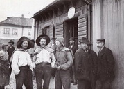
Här är några tegelbärare utanför Ekorren på Götgatan i hörnan av Ölandsgatan.
Beijerska Trädgården bör ha funnits i kvarteret efter korsningen Östgötagatan/Blekingegatan. Trädgården sträckte sig över hela kvarteret och en del av Katarina Bangata, fram mot ett plank mot Götgatan. Det var en stor handelsträdgård som till större delen odlade grönsaker. Den hade funnits där ända sedan mitten av 1600-talet.
I början av 1900-talet började man spränga ner hela Postmästarbacken, d.v.s. nuvarande Götgatan från Skanstull till ungefär Blekingegatan. Högsta punkten var vid Gotlandsgatan (Götgatan 60) som var c:a åtta meter högre än idag. Sedan sluttade det nerför igen, om man kom söderifrån, fram till strax före nuvarande Medborgarplatsen. Man kan se spår av bergskrönet vid Gotlandsgatans trappor mot Götgatan.
Nedan visas hörnet Götgatan 87/Gotlandsgatan 3, 5 och7, samma vy som bilden härintill till vänster, fast uppe på Gotlandsgatan. 1932. Nästa bild visar Postmästarbacken mot norr från Gotlandsgatan fotograferad 1901. Bilden längst till höger är tagen söderut från Blekingegatan 1885. Hela backen sprängdes bort i flera etapper och husen finns inte längre kvar. Blekingegatan skymtar bakom den lilla flickan, där hörnhuset är Götgatan 54. Till vänster bakom planket fanns Beijerska trädgården
Källa Götgatan, Maj Sandin
Foto Casper Salin SSM
|
{kind=link}
{kind=link}
{kind=link}
{kind=link}
{kind=link}
{kind=link}
{kind=link}
|
|
Johan von Beijer var av tysk härkomst, född 1606 i Berlin, död 1669 i Stockholm. Han kom i svensk tjänst 1632-33 som kanslist hos rikskanslern Axel Oxenstierna, och flyttade 1636 till Sverige. Oxenstierna befordrade honom 1637 till sekreterare i Kommerskollegium och 1642 till rikspostmästare, vilket innebar förvaltningen av postväsendet såväl i det egentliga Sverige som i provinserna. Beijer hade bostad på flera adresser vid Storkyrkobrinken i Stockholm bland annat i Beijerska huset i nummer 4 och det gamla apotekshuset i nummer 3. Han ägde även två tomter på Södermalm Beijerska malmgården och den betydligt större Beijerska trädgården, där han uppförde ett stenhus, båda utmed Götgatan.
|
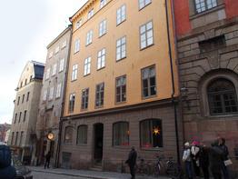 |
{kind=link}
|
Idag är Johan Beijer helt bortglömd trots att hans vackra stenhus fortfarande finns kvar i skuggan av Storkyrkan. Två år efter Johans födelse utbröt krig mellan protestanter och katoliker. Ingen trodde att det skulle bli långvarigt. I krigets slutskede var nästan alla av Europas stater inblandade och stora delar av Tyskland hade förvandlats till en ödemark där skorstenar från nedbrända hus berättade om att här hade det en gång legat en välmående by. Då bodde Johan Beijer i Stockholm och var en förmögen postmästare. Det var tack vare rikskansler Axel Oxenstierna som han kunde göra denna klassresa. Johan Beijers familj berättar de svenska källorna inte speciellt mycket om. Familjen var välbärgad och Johan fick en god skolutbildning, Svårigheterna tornade upp sig när det gällde att få arbete. Han var inte adlig och regenterna i de små tyska furstendömena anställde nästan uteslutande män med anor. När Axel Oxenstierna år 1626 landsteg i Tyskland för att härifrån få en varaktig fred med Polen öppnades nya vägar till arbete för utbildade unga män. Johan Beijer fick arbete i kansliet och hade bland annat ansvar för den svenska handeln med järn till olika länder i Europa. När de stridande parterna samlades i Prag år 1635 för att försöka komma överens om ett fredsavtal fick Johan Beijer flera diplomatiska uppdrag. Det blev inget fredsavtal och året därpå återvände axel Oxenstierna till Sverige. Han tog med sig Johan Beijer till Sverige. Johan Beijer blev en tillgång för Axel Oxenstierna. Kommerskollegium var en ny myndighet med ansvar för landets utrikeshandel. Chef för detta kollegium var amiral Clas Larsson Fleming, som ofta deltog i kriget. Under denna tid hade Johan Beijer huvudansvaret för utrikeshandeln. Ett av hans specialområden blev att ordna kontakter med svenskarna i kolonien Nya Sverige på Nordamerikas ostkust. Härifrån skickades pälsar och tobak till olika hamnar i Europa. Någon befordran var det inte tal om. Anders Beijer var inte adlig.
|
|
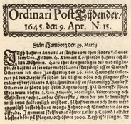 |
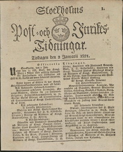 |
Som redan nämnts utsågs Johan Beijer 1642 till rikspostmästare. Det svenska postverket var vid den här tiden en nyskapelse, och breven befordrades mellan stationerna av löpande postdrängar. Beijer införde dock flera förbättringar, bland annat ridande postbud efter de större postlinjerna. Som postmästare fick han även i uppdrag att införskaffa och förmedla nyheter från utlandet, och blev därigenom den förste att utge en svensk tidning: 1643 och 1644 enstaka extraktskrivelser och från 1645 Ordinari Post Tijdender. Den fick senare namnet Post- och Inrikes tidningar. Här kunde man läsa hur det gick för svenskarna i kriget i Tyskland, hur det var att leva som granne med indianerna i Nordamerika och också hur väl Axel Oxenstierna skötte om landet. Johan Beijer inrättade också ett postkontor intill Storkyrkan. Hit kom folk med brev och paket och betalade en slant för att det skulle skickas till släktingar eller goda vänner i vårt land, i Finland och i de baltiska staterna. Det gick också bra att skicka brev och paket till de som krigade i Tyskland. Kanske hade de svenska officerarna samma matvanor som Axel Oxenstierna. Hans svenska favoritmat var saltad lax. |
{kind=link}
{kind=link}
|
Tiderna förändrades och Axel Oxenstierna åldrades och förlorade sin forna ställning som landets mäktigaste man. År 1644 blev drottning Kristian myndig och nu flockades högadliga män runt omkring henne. Hon började dela ut kronojord till några av dessa och så småningom började hon se sig om efter andra sätt att gynna sina gunstlingar. Då kom hon att tänka på posten, som nu drevs som ett privat företag med Kungligt medgivande. Hennes gunstling friherre Wilhelm Taube utnämndes helt plötsligt år 1654 till generalpostmästare och Johan Beijer fick endast behålla förtjänsten av de brev och paket, som skulle skickas till de baltiska staterna. Någon månad senare adlades Johan Beijer och tog sig då namnet von Beijer. Nu började den tidigare förmögne Johan Beijer få ekonomiska svårigheter. Ett problem var att han inte hade betalat fastighetsskatt som han skulle. Det fanns en regel i Stockholm. Alla adelsmän, som ägde en fastighet, var undantagna för fastighetsskatt. Alla andra husägare var skyldiga att göra detta. Johan Beijer ägde fastigheter både i närheten av Storkyrkan och på Götgatan. Som adelsman var han befriad att betala fastighetsskatt, men inga gamla skatteskulder kunde efterskänkas. Samtidigt begärde han att få Västberga gård klassad som säteri. Om detta skedde gällde andra och betydligt förmånligare skattevillkor. En annan fördel var att säteriernas torpare och drängar inte fick skrivas ut som soldater. Det gick inte som Johan von Beijer hade tänkt sig. Huvudbyggnaden i Västberga var inte ståndsmässig och för att få säterirättigheter blev Johan von Beijer ombedd att bygga om gården. Detta skedde och gården ser nästan ut idag som den gjorde efter ombyggnaden.
|
En underlighet inträffade 1653 då drottning Kristina, som nämnts ovan, gav tjänsten som rikspostmästare i förläning till riksrådet friherre Wilhelm Taube samtidigt som Johan Beijer fått förnyat förordnande i ytterligare två år, det vill säga till 1655. Att Beijer förlorade tjänsten som rikspostmästare är underligt på flera sätt. Missnöjd med hans tjänster var man definitivt inte, det visar bland annat att han sedan Taube övertagit tjänsten blev adlad. År 1653 vistades Beijer i tre månader i Tyskland för att kurera en sviktande hälsa. Men när han återvänder är han i full vigör och det är knappast heller detta som föranlett chefsombytet. Därefter inledde en långvarig schism mellan Beijer och Taube. Den 9 juli 1655 bestämde Karl X Gustav att återinsätta Beijer som generalpostmästare. Men eftersom han inte fullgjorde sina ekonomiska förpliktelser så avsattes han igen den 8 maj 1658 och Taube var åter chef för postväsendet. Vid denna tidpunkt var ett nät för post utbyggt. Det sträckte sig från landets södra delar, upp till Haparanda och genom Finland till Åbo och vidare till sjön Ladoga. Varje postiljon hade sin egen sträcka. Vintertid tog det tre veckor för ett brev att färdas mellan Stockholm och Åbo. Sommartid gick det fortare, eftersom postens roddare tog sig fram mellan skärgårdens öat till Åland och därifrån till Åbo. Om möjligt måste postiljonerna ha tillgång till hästar. Till deras utrustning hörde vapen att slå ned rövare och vilddjur med och ett horn. När hornstötarna hördes i en by visste alla att nu var posten här. År 1660 ordnar Beijer en egen privat post vilken är snabbare än den ordinarie svenska posten. Beijers post utnyttjades mycket av köpmän och väckte mycken irritation hos Wilhelm Taube som förlorade inkomster och klagade hos regeringen. Men trots Wilhelm Taubes klagomål anlitades Beijers post av personer i hög ställning. Så anlitade till exempel drottning Kristina Beijers post när hon 1661 var på besök i Sverige. |
|
Johan Beijer blev förmögen på denna verksamhet. Han köpte en trädgård och ett hus på Götgatan vid sjön Fatburen, Västberga gård i Brännkyrka socken och två rivningsfastigheter vid Storkyrkobrinken. Han rev dessa kåkar och lät uppföra det vackra stenhus, som fortfarande finns kvar med adress Storkyrkobrinken 4. Se bilden ovan!
Nu skrev Beijer, den 20 december 1662, ett nytt avtal med kronan om arrende av postväsendet, bortsett från Östersjöprovinserna och de tyska provinserna. Beijer utnämndes den 15 december 1668 till hovråd och därmed upphörde hans postarrende. Samtidigt flyttades postväsendets högsta administration från Stockholms postkontor till kanslikollegiet. Beijer kvarstod dock som postmästare för Stockholms postkontor fram till sin död den 13 september 1669. |
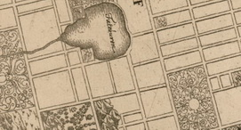 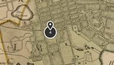 |
{kind=link}
{kind=link}
 Götgatan 54-60, Postmästarbacken söderut |
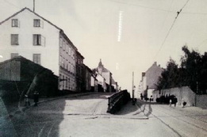 Postmästarbacken från söder |
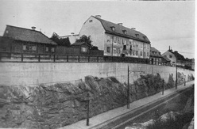 Götgatan 60, Stora gården, från sydost |
{kind=link}
{kind=link}